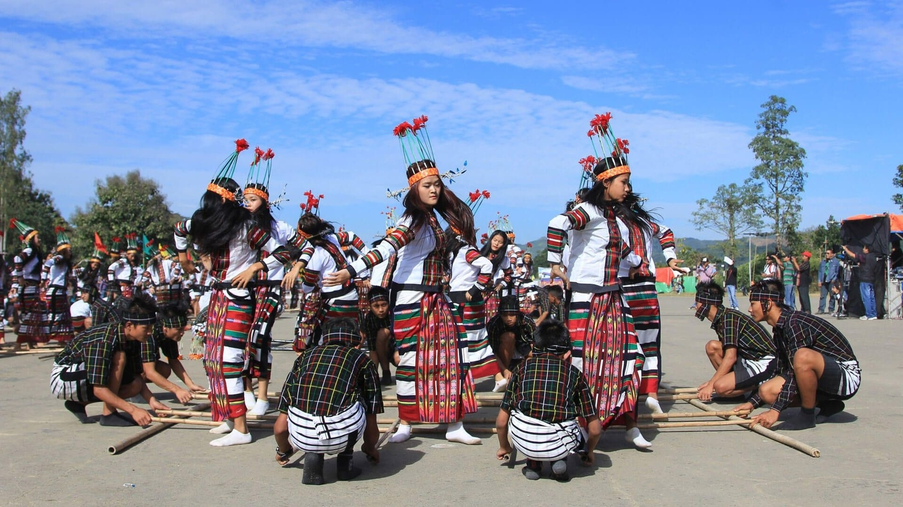

Welcome to Mizoram!

Mizoram, located in northeastern India, is renowned for its scenic beauty, rich cultural heritage, and vibrant
traditions. The culture of Mizoram is deeply rooted in the customs and beliefs of its indigenous Mizo tribes,
characterized by colorful festivals, unique cuisine, and intricate handicrafts.
Festivals play a central role in Mizoram's cultural life, with Chapchar Kut, Mim Kut, and Pawl Kut being among the
most significant. These festivals celebrate agricultural harvests and include traditional dances such as Cheraw
(bamboo dance) and Chheihlam, accompanied by vibrant music and songs that reflect the community's joy and unity.
Mizo cuisine reflects the region's agrarian lifestyle and use of local ingredients. Staple foods include Bai, a
nutritious dish made with steamed vegetables and herbs, and Misa Mach Poora, a spicy preparation of fish. Mizo
delicacies often feature bamboo shoots, pork, and locally grown herbs, showcasing the culinary traditions passed
down through generations.
Music and dance are integral to Mizoram's cultural expression, with folk dances like Cheraw (bamboo dance) and
Khuallam performed during festivals and social gatherings. These dances are marked by intricate footwork and
rhythmic movements, accompanied by traditional instruments like the Khuang and Tumdeng.
Mizoram's religious landscape is predominantly Christian, with churches playing a significant role in community
life. The state's natural beauty, including lush green hills, cascading waterfalls like Vantawng Falls, and serene
lakes such as Tamdil Lake, provides a picturesque backdrop for cultural experiences and eco-tourism activities.
Handicrafts such as intricate bamboo and cane products, hand-woven textiles, and traditional attire like Puanchei
and Kawrchei showcase the artistic skills and cultural heritage of Mizoram's artisans. These crafts not only serve
as decorative items but also hold cultural and ritualistic significance within the Mizo community.